P32 production
8 routes × 390/1024, 핵심 1440. HTTP 200, overflow 0, unnamed focusable 0, console/page error 0.
Execution CRUD / Goal UX Review · 2026-07-25
FlowMe는 일정·Todo·체크리스트 실행에 필요한 핵심 계약을 이미 갖췄다. P34의 과제는 새 planner 기능을 더하는 것이 아니라, 보관·수정·완료·날짜 배치·반복·export가 모든 화면에서 같은 문법으로 보이게 만드는 것이다.
P33 canonical alignment를 먼저 production에 반영한 뒤, lifecycle 발견성과 공통 command composition을 제한적으로 재구성한다. 데이터 계약·4탭 IA·public shell의 전면 재작성은 근거가 없다.
Evidence boundary
production interaction을 우선했고, P33은 인증된 Preview가 아니라 current source와 local render로만 판단했다.
8 routes × 390/1024, 핵심 1440. HTTP 200, overflow 0, unnamed focusable 0, console/page error 0.
SHA 8c54992c. moving cross-entry 24개 정렬과 legacy 307 redirect를 source/local render로 확인.
Vercel 인증 화면으로 이동했다. 따라서 P33 preview interaction을 완료했다고 표현하지 않는다.
lifecycle, Item state, undated, recurrence, run, export, identity, storage 관련 targeted unit 90/90.
Severity findings
Blocking 1, High 5, Medium 4, Low 2. 아래는 구현 순서를 바꾸는 항목만 요약했다. 재현 단계와 marker는 audit.md에 있다.
저장 전 본 단위와 저장 결과가 다르다. P33 source는 정렬됐으므로 P34 redesign이 아니라 P33 production publish/smoke gate로 닫아야 한다.
`보관` 후 별도 보관함에서만 `복구`와 `이 기기에서 영구 삭제`가 나타난다. 첫 `Flow 관리`에서 lifecycle 전체를 예측시켜야 한다.
조정/수정/구성 편집, 제외/삭제/건너뛰기, 가져가기/export가 surface마다 다르게 등장한다. shared command grammar가 필요하다.
moving 24개는 4개 조정 모드, routine은 artifact/date/repeat form이 길게 이어진다. 결과 row를 직접 고친 뒤 diff를 확인하는 흐름이 필요하다.
agenda 또는 날짜 없는 queue에 도달하기 전에 약 42개 날짜를 지난다. 하나의 grid 진입점과 화살표 탐색이 필요하다.
분할 결과는 유용하지만 split/merge/reorder를 모두 상시 노출한다. 기본은 include/title/date, 구조 편집은 별도 mode가 적절하다.
bottom sheet 방향은 맞다. header action, quick fields, advanced fields, export의 순서만 공통 anatomy로 고정한다.
`월·수·금 07:30 · 8회` summary와 next 3회를 먼저 보이고, series 조정과 이번 회차 조정을 분리한다.
whole/selected/current와 실제 count를 먼저 정하고, destination과 손실 preview를 다음 단계에 둔다.
이번 P34에서는 IA를 다시 열지 않는다. Home은 사용 맥락·재사용, Find는 검색·source lookup에 집중하는 가설만 보류한다.
Interaction evidence
동일한 390px에서 저장 전, receipt, 저장 후 전체 Flow, 관리 메뉴를 비교했다.
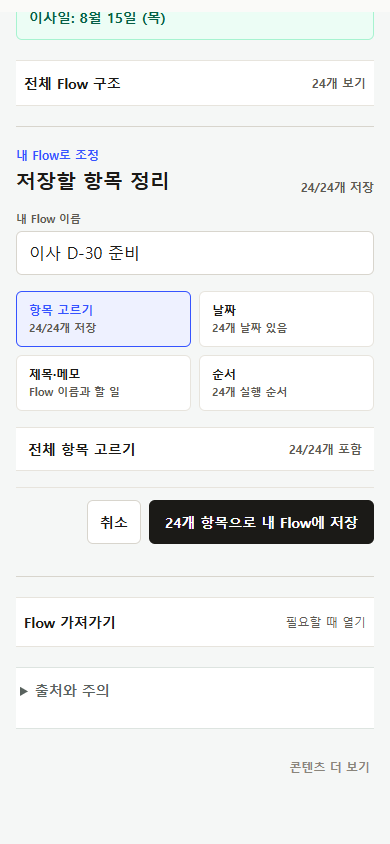
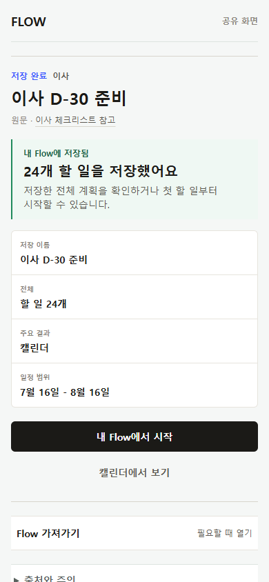
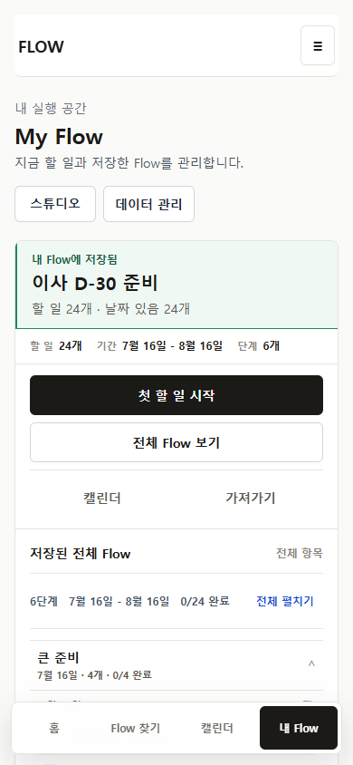
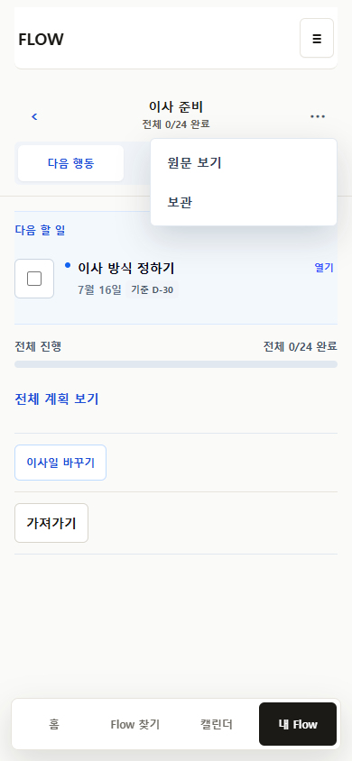
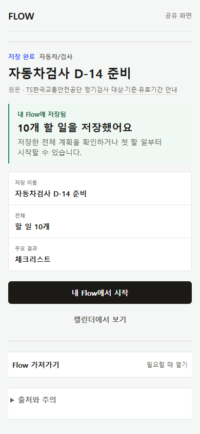
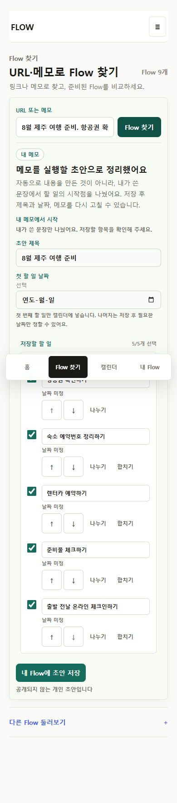
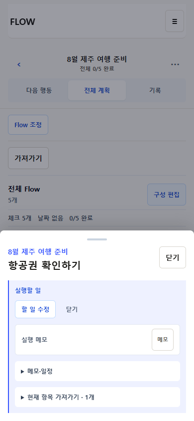
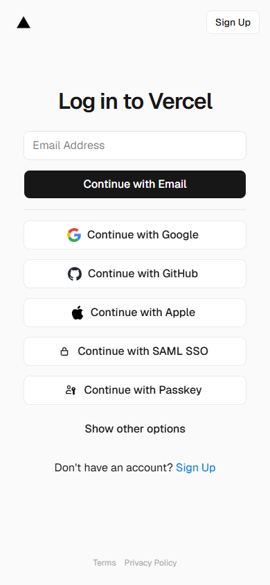
CRUD capability
상세 15개 객체 × Create/Read/Update/Delete/Restore/Reuse/Export 셀은 JSON matrix에 기록했다.
source를 보존한 개인 사본 생성·조정·재사용·export가 가능하다. published source 삭제는 금지된다.
생성, 구조 수정, 보관, 복구, 영구 삭제, reload persistence가 있다. active lifecycle 진입이 hidden이다.
제목·날짜·시간·장소·메모·순서 수정과 personal delete/source exclude가 분리된다. command 위치는 inconsistent하다.
유효한 실행 상태다. Calendar queue에서 batch 배치, undo, 날짜 제거 후 복귀가 가능하다.
stable identity와 this/future/all scope는 있다. summary보다 설정 form이 먼저 읽힌다.
완료·다시 열기, 새 실행, 과거 run history가 source/personal state와 분리된다.
archive undo, direct restore, backup, permanent delete 확인이 있다. 첫 active menu에서 전체 경로가 안 보인다.
whole/selected/current identity와 count는 안정적이다. format보다 scope를 먼저 선택하는 공통 shell이 부족하다.
독립 객체는 없다. 현재는 Flow 진행률·section·completion·run으로 충분하며 추가 근거 없이 만들지 않는다.
8 personas × 3 sessions
같은 persona의 저장 상태를 세 session에 이어 붙였다. fixture는 scale 검토에만 쓰고 실제 사용자 도달 상태와 분리했다.
| Persona | Session A · 저장 | Session B · 수정/실행 | Session C · 복구/재사용 | 핵심 단절 |
|---|---|---|---|---|
| P1 이사 역산 | partial | supported | P32 5↔24 mismatch, lifecycle hidden | |
| P2 날짜 없는 차량 | partial | supported | partial | artifact/date intent 경쟁, export entry 분산 |
| P3 반복 홈트 | partial | partial | partial | series 설정과 occurrence 실행 hierarchy |
| P4 장기 학습 | supported | partial | partial | 긴 Flow current position과 run reuse |
| P5 URL/메모 draft | partial | partial | partial | 5 Item에 43 controls, structural edit 과다 |
| P6 다중 Flow | supported | partial | 관리 action 분산, archived path 발견성 | |
| P7 export 중심 | partial | partial | partial | scope-first preview와 loss 예측 |
| P8 keyboard/저시력 | partial | partial | partial | Calendar 42 Tab stops, hidden lifecycle |
각 cell의 route, viewport, start state, tap depth, parity, recovery, evidenceKind는 persona-journey-scorecard.json에 있다.
Surface decision
새 카드를 더 쌓지 않고 기존 frame의 역할을 선명하게 한다.
Interaction grammar
완료·제외·삭제·보관은 데이터상 다르다. 같은 단어로 합치지 않고, 어느 객체를 바꾸는지 명확히 표기한다.
Goal boundary
장기 학습과 반복 루틴의 불편을 새 Goal 객체로 덮지 않는다. 우선 현재 Flow 진행률과 run hierarchy를 읽기 쉽게 만든다.
별도 Goal 객체 없이 전체/완료 수, section, next action, run history를 제공한다. 현재 계약으로 가능하며 portable execution layer 경계를 지킨다.
goal title, milestone, review date만 personal overlay로 추가한다. 실제 반복 사용에서 Flow progress가 부족하다는 근거가 생길 때만 검토한다.
목표 dashboard, streak, habit, 성과 추적은 FlowMe를 Notion/Todo/Calendar 대체 제품으로 확장한다. 현재 가치 사슬과 맞지 않는다.
Official reference patterns
공식 도움말/제품 문서에서 확인한 pattern이다. FlowMe에 full planner 기능을 복제하지 않는다.
| 제품 | 참고 pattern | FlowMe 판정 | 적용 방식 |
|---|---|---|---|
| Google Calendar | 날짜 있는 task의 Calendar 노출, pending task, 반복 일정의 현재/전체 수정 | 변형 필요 | undated는 queue에 두고, series/occurrence scope만 차용한다. |
| Apple Reminders | 동일 위치 complete/reopen, completed 보기, Recently Deleted 복구 | 적용 | 완료와 삭제를 분리하고 lifecycle 복구를 직접 노출한다. |
| Todoist | 빠른 task 생성과 상세 view 분리, 반복 task 완료 문법 | 변형 필요 | Item quick fields와 advanced disclosure에만 적용한다. |
| TickTick | task/list와 Calendar 분리, batch reschedule | 적용 | My Flow 실행과 Calendar 날짜 배치를 분리하고 batch preview를 유지한다. |
| Things | Anytime/Someday/Logbook, 반복 template과 생성된 task 분리 | 변형 필요 | undated와 run history, series/occurrence 구분에만 사용한다. |
| Microsoft To Do | detail view, delete confirmation, restore, step count | 적용 | Item sheet anatomy와 Flow lifecycle confirmation에 적용한다. |
| Structured | timeline 중심의 낮은 정보 밀도와 빠른 reschedule | 변형 필요 | Calendar visual density만 참고한다. day planner화는 금지한다. |
| Notion | archive와 delete/restore의 분리, database view | archive semantics만 참고하고 database/workspace 모델은 가져오지 않는다. |
Current / proposed
production 데이터 계약으로 가능한 composition만 우선 제안했다. Goal overlay처럼 선행 계약이 필요한 화면은 구현안에서 제외했다.
public save-before, receipt, My Flow 목록/집중 workspace, Item editor, Calendar detail, undated 배치, routine, lifecycle, export를 실제 콘텐츠로 비교한다.
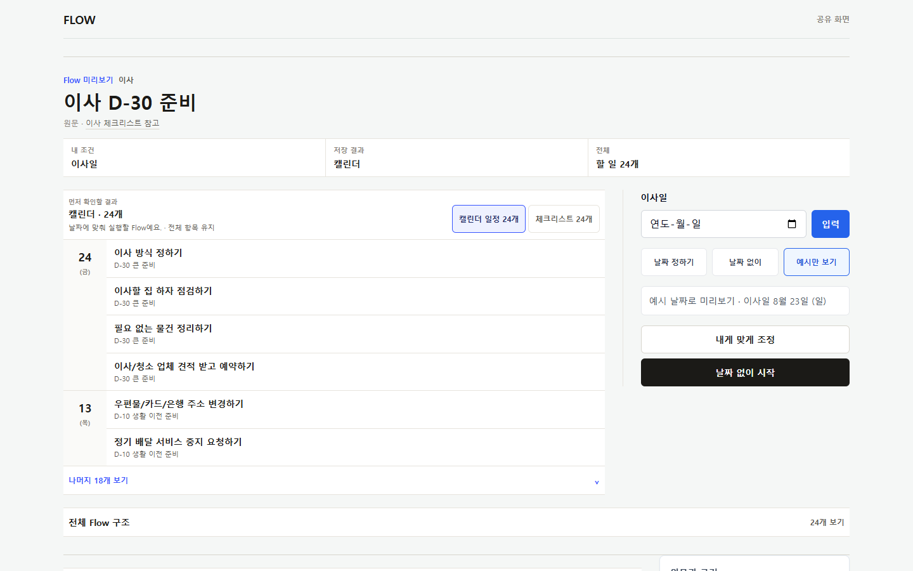
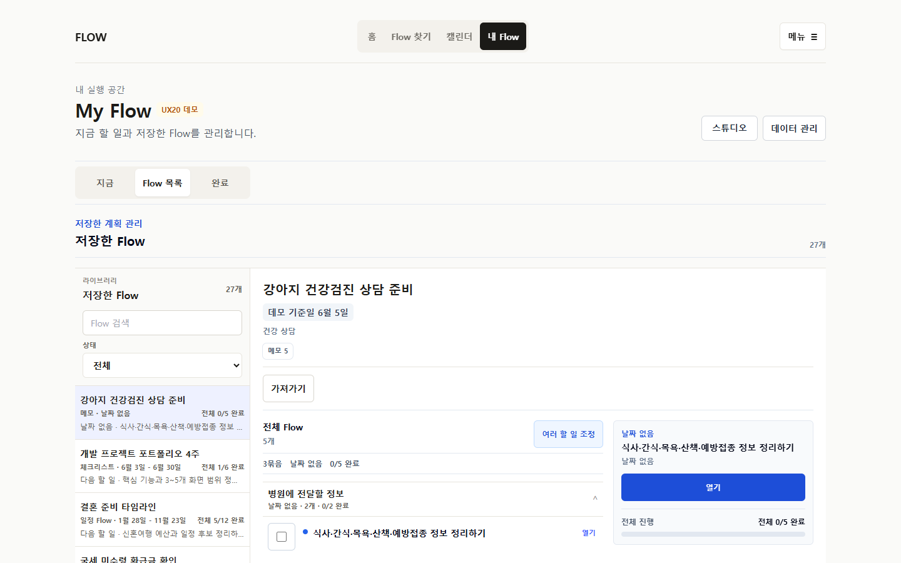
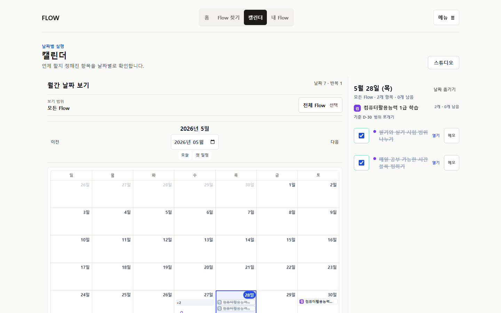
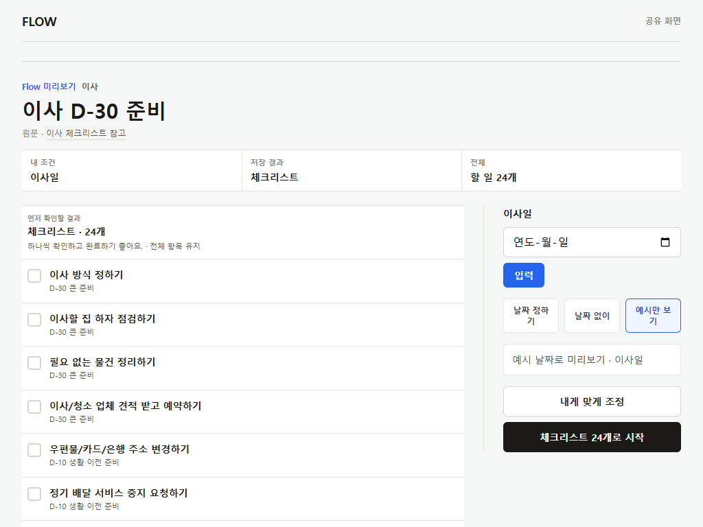
P34 implementation order
P33 production gate 이후 P34-01/02를 순차 실행하고, 03~07은 공통 command 계약 확정 뒤 병렬화할 수 있다.
각 slice의 범위, 비범위, 데이터 영향, acceptance screenshot, E2E marker, rollback은 p34-backlog.md에 있다.
Observed-user only
이번 단계에서는 모집·관찰 계획을 작성하지 않는다. 아래는 실제 사용자가 있어야만 확인 가능한 가정이다.
검토 한계
P33 Preview interaction은 인증 때문에 확인하지 못했다. local P33 render는 current source의 heuristic evidence이며 production 배포 증거가 아니다.
변경 경계
앱 코드, 저장 데이터, dependency, STATUS/ROADMAP, commit, push, PR, merge, deploy는 변경하지 않았다. Figma는 사용하지 않았고 HTML wireframe을 선택했다.